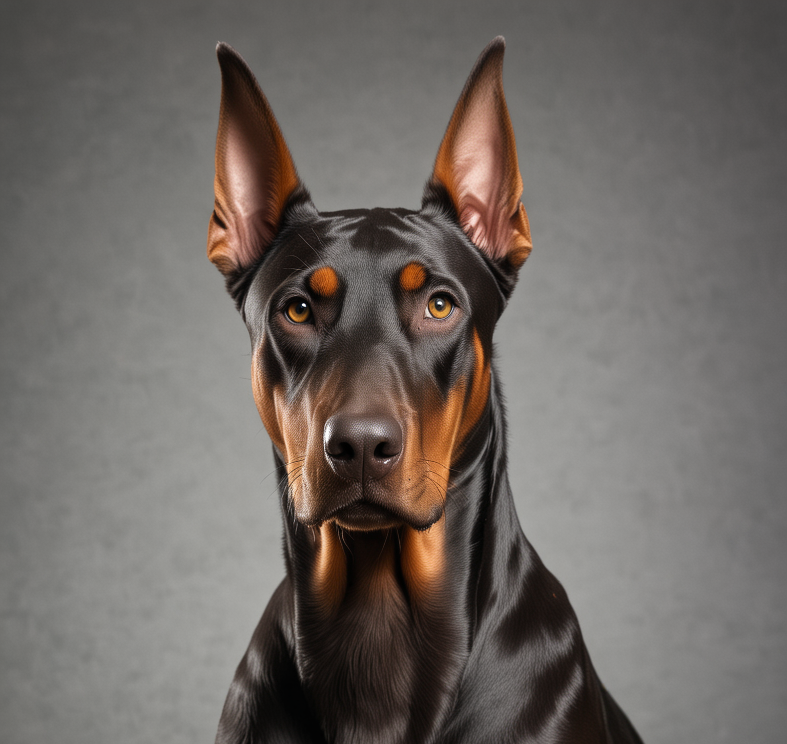

Мы приют Милая Будка
Маленькая Будка - это уютное убежище для тех, кто ищет дом и любящего хозяина. Наш приют предлагает безопасное и заботливое пристанище для бездомных собак и кошек. Мы гордимся нашей преданной командой волонтеров и ветеринаров, которые делают все возможное, чтобы каждое животное почувствовало себя желанным и любимым. В Маленькой Будке мы верим в силу преображения и дарим каждому питомцу шанс на новую жизнь. Присоединяйтесь к нашему сообществу и станьте частью нашей невероятной истории спасения и надежды.
Реквезиты: 4255-2820-1901-6888 | BelarusBank